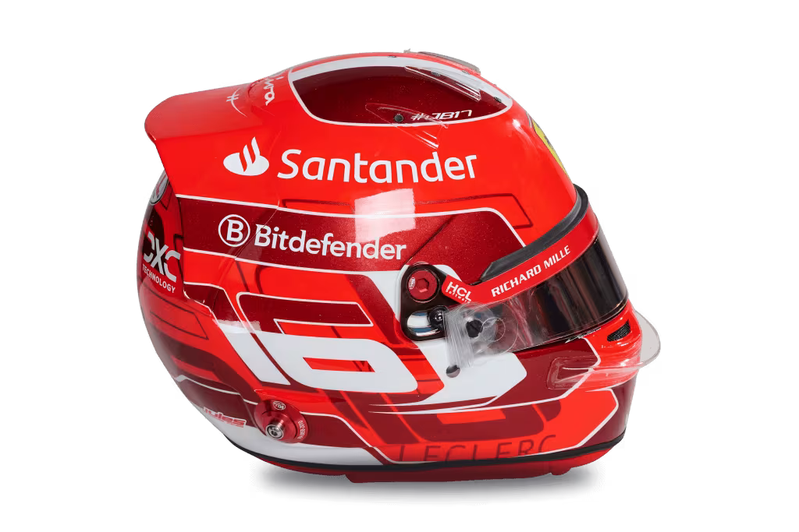

Max Verstappen
Red Bull Racing



优秀
车手
F1（Formula 1）方程式赛车赛事是世界上最顶级的单座赛车系列赛事之一，由国际汽车联合会（FIA）组织，参赛的车队和车手都代表着全球汽车运动的最高水平。F1赛事以其高速度、高技术、激烈竞争和全球影响力著称。以下是F1赛事的详细介绍：
- 1. F1的历史
F1起源于20世纪50年代初期，首届世界锦标赛赛事在1950年举行。自那时以来，F1逐渐发展成为全球最具商业价值和技术含量的赛车系列之一。F1车手和车队需要经过多年的训练、技术创新和竞争，才能站在世界的顶端。
- 2. 赛事结构
F1赛事通常每年举行20场左右的大奖赛（Grand Prix），这些比赛分布在世界各地。每一场比赛都是一个独立的赛事，而每个赛季的总冠军则根据全年比赛的积分排名产生。积分系统对每场比赛的前10名车手进行奖励，最多积分为25分，逐渐递减至10名，后续名次有少量积分。
赛季和赛事
赛季：F1赛季通常从每年的3月或4月开始，持续到11月或12月。比赛地点涵盖了全球多个国家和地区。
大奖赛：每场赛事称为“大奖赛”，通常由车队（例如梅赛德斯、红牛、法拉利等）与车手参与。每场大奖赛都在特定的赛道上进行。
- 3. 赛车
F1赛车是高度专业化、技术复杂的单座赛车，通常使用碳纤维材料，具有强大的动力系统。F1赛车的技术要求极高，各车队通过不断的技术创新、风洞测试、动力系统优化等手段，争取在赛场上占得先机。
引擎：br
现代F1赛车使用1.6升V6涡轮增压混合动力发动机，兼具电动机和燃油引擎。
空气动力学：车身设计和气流控制至关重要，通过使用空气动力学技术提高车辆下压力和稳定性。
轮胎：轮胎由Pirelli等品牌提供，分为干地、湿地和极端天气条件下的不同类型。
- 4. 车队与车手
F1比赛中，车队是参与赛事的主要单位，每支车队拥有两位车手参与比赛。车手不仅要具备卓越的驾驶技术，还要具备高度的心理素质和团队合作精神。
车队：
F1车队如梅赛德斯、红牛、法拉利、迈凯伦、阿尔派等，每支车队背后都有强大的工程和技术团队。
车手：车手是F1赛事的核心，他们需要在极端压力和高速环境下做出决策。著名车手包括刘易斯·汉密尔顿、塞巴斯蒂安·维特尔、迈克尔·舒马赫、马克·韦伯等。
- 5. 赛道
F1的赛道可以分为两种类型：市街赛道和常规赛道。市街赛道通常设立在城市中心，赛道布局复杂，观众接近赛道；而常规赛道则多设在专业赛车场，设计更为规范，安全性较高。
著名赛道：
如摩纳哥大奖赛的市街赛道、银石赛道（英国）、蒙扎赛道（意大利）、斯帕赛道（比利时）、巴林赛道（巴林）等。
- 6. 比赛规则
F1赛事有严格的比赛规则，包括赛车的技术规范、车手的行为准则、安全规定等。每场比赛都分为以下几个阶段：
练习赛：
通常有三个阶段（自由练习1、2、3），车手通过这些练习赛熟悉赛道，调整赛车设置。
排位赛：排位赛决定了车手在正赛中的起跑位置。排位赛分为三个阶段，前两轮为淘汰制，最后的部分为决定前十名车手的起跑顺序。
正赛：正式比赛。通常持续1.5到2小时，车手需在比赛中完成一定的圈数，最终根据成绩积分排名。
- 7. 安全性
由于F1的比赛具有极高的速度和风险，FIA（国际汽车联合会）在安全性方面采取了严格的措施。包括：
赛车安全：
F1赛车配备了最新的安全技术，如强度极高的车身结构（F1的“安全笼”）、HANS（头颈保护系统）、火焰防护服等。
赛道安全：赛道四周设置防护栏和吸能装置，车手在赛道上的安全是赛事中的首要考虑因素。
- 8. F1的商业和全球影响
F1不仅仅是一项体育竞技，还是全球商业的重要平台。赛事的赞助商、电视转播权、品牌合作等为F1带来了巨大的商业收入。通过广告、商品销售、授权合作等渠道，F1赛事成为全球知名的品牌和娱乐产业。
FIA WEC
世界耐力锦标赛
世界耐力锦标赛（FIA World Endurance Championship，WEC）
世界耐力锦标赛（WEC）是全球顶级耐力赛车赛事，由国际汽车联合会（FIA）和西方汽车俱乐部（ACO）共同主办。它汇聚了最顶尖的车队和车手，通过一系列长时间、高强度的赛事，测试车辆的性能、车队的策略以及车手的耐力。
1. 赛事历史与发展
创立年份：2012年，是自1992年世界跑车锦标赛终止后，FIA与ACO共同打造的全球耐力赛车系列。
历史传承：WEC继承了勒芒24小时耐力赛的传统，将耐力赛车推广至全球赛道。
标志性赛事：每年的勒芒24小时耐力赛是WEC的旗舰赛事，也是全球赛车爱好者关注的焦点。
2. 赛季与赛程
WEC赛季通常跨越一年，从春季开始，持续到次年初，赛季包含6-8站比赛，每场比赛在不同国家和地区的知名赛道上举行。
主要赛道和赛事
勒芒24小时耐力赛（法国）：赛季最重要的比赛，持续24小时。
富士赛道（日本）：6小时耐力赛，丰田的主场。
斯帕-弗朗科尔尚赛道（比利时）：6小时耐力赛，被视为勒芒的热身。
蒙扎赛道（意大利）：以高速弯道著称。
巴林国际赛道（巴林）：8小时耐力赛，为赛季收官战。
其他赛道：包括银石赛道（英国）、美洲赛道（美国）等。
比赛时长
比赛时长从6小时到24小时不等，时间越长对车辆和车队的考验越大。
3. 组别分类
WEC赛事根据车辆的性能和设计，将参赛车辆分为以下主要组别：
(1) Hypercar（顶级组别）
概述：最高级别的赛车组别，代表着最先进的赛车技术和性能。
参赛车型：原型车和基于量产车型改装的超级跑车。
代表车型：丰田GR010 Hybrid、法拉利499P、保时捷963等。
特点：
允许使用混合动力系统。
更强调空气动力学效率和燃油经济性。
(2) LMP2（勒芒原型车2组）
概述：为私人车队提供的高性能原型车组别。
代表车型：奥瑞卡07、达拉拉P217等。
特点：
车队和制造商必须采用统一的引擎和底盘，保证比赛的公平性。
经济性更高，是众多车队的热门选择。
(3) LMGTE Am（勒芒GT业余组）
概述：基于量产车型的GT赛车组别，包含专业和业余车手的混合参赛。
代表车型：保时捷911 RSR、法拉利488 GTE、阿斯顿·马丁Vantage AMR。
特点：
参赛车辆与市售跑车外观相近，但内部经过全面改装。
必须包含至少一名业余车手。
4. 赛事规则与积分系统
(1) 赛道规则
每支车队需派出2-3名车手轮流驾驶，同一车手在规定时间内不得连续驾驶超过一定时长。
比赛中必须进行轮胎更换、加油以及车手更换。
(2) 积分系统
按照每场比赛的名次进行积分，前十名车队和车手可获得积分。
特殊积分：勒芒24小时赛的积分更高，因为其重要性远超其他比赛。
(3) 补时和平衡
BoP（性能平衡）：FIA通过BoP调整确保不同厂商的车辆性能相对平衡，以增加比赛竞争性。
5. 技术创新
WEC一直是汽车制造商展示前沿技术的舞台，以下是赛事推动的技术进步：
混合动力技术：在Hypercar组别中广泛使用，提升赛车的能源效率。
可持续燃料：从2022赛季起，WEC引入了环保燃料，推动赛车环保化。
空气动力学优化：原型车采用极端空气动力设计，提高速度和燃油效率。
6. 车队与制造商
WEC吸引了众多知名车队和汽车制造商，包括：
丰田Gazoo Racing：自2018年起在Hypercar组别连续夺冠。
法拉利AF Corse：2023年重返顶级组别，并在勒芒24小时赛中取得胜利。
保时捷Penske Motorsport：在耐力赛历史上拥有辉煌记录。
其他知名厂商：标致、凯迪拉克、阿斯顿·马丁、宝马等。
7. 赛事魅力
极限考验：WEC比赛不仅仅是速度的较量，更是对车手、车辆和团队在极限条件下表现的综合考验。
团队合作：维修团队、策略人员与车手之间的密切配合至关重要。
激烈竞争：性能平衡规则和不同组别的混战让比赛充满悬念。
8. 未来展望
新技术的加入：随着电气化和氢燃料的发展，WEC计划在未来进一步探索这些新技术在赛车中的应用。
更多厂商参与：兰博基尼等新厂商宣布加入，Hypercar组别竞争将更加激烈。
全球扩展：WEC持续扩展赛历，吸引更多地区的车迷。
更多赛事